Duo Amábile
amabile — na partitura, a indicação para tocar com doçura.
Uma soprano e um violonista, os dois doutores em música, tocando a canção de câmara brasileira em teatros, igrejas e universidades do Brasil e da Europa.
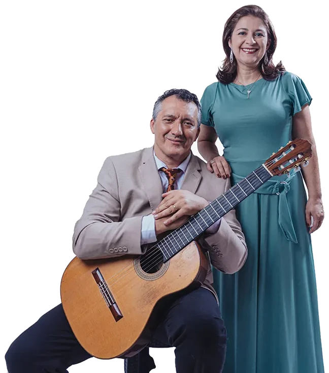
- 2015
- Primeiro concerto, em Corumbá
- 6
- Países visitados pelo Duo
- 16
- Cidades de MS em turnê
- 4
- Projetos com fomento público
O duo
Desde 2015 os dois tocam juntos o repertório que quase ninguém estava tocando: a canção de câmara brasileira, muita dela escrita sobre poemas de Mato Grosso do Sul.
A parceria é bem mais antiga que o Duo: Ana Lúcia Gaborim e Marcelo Fernandes são casados desde 1998. Dividir o mesmo palco, porém, só veio em 2015, e por convite — o projeto SESC Partituras, que os levou ao Teatro do SESC de Corumbá para interpretar música de câmara brasileira escrita ou arranjada para canto e violão. No começo se apresentavam apenas como “Duo de Violão e Canto”. O nome veio depois.
De lá para cá foram concertos em igrejas, teatros, museus, academias de letras e universidades. Marcelo compõe sobre poemas de escritores sul-mato-grossenses e brasileiros; Ana Lúcia estreia essas canções. É um repertório que em boa parte não existiria se o Duo não existisse.
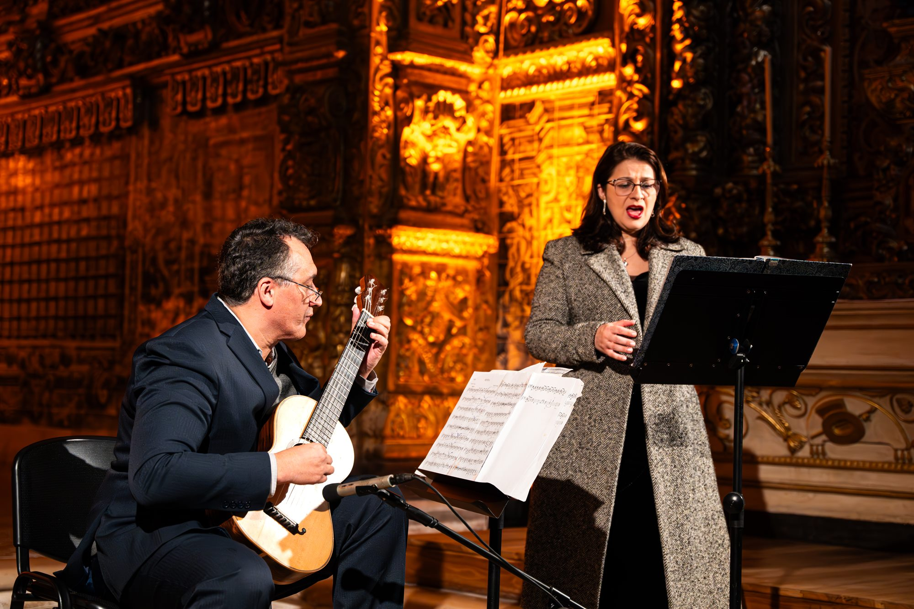
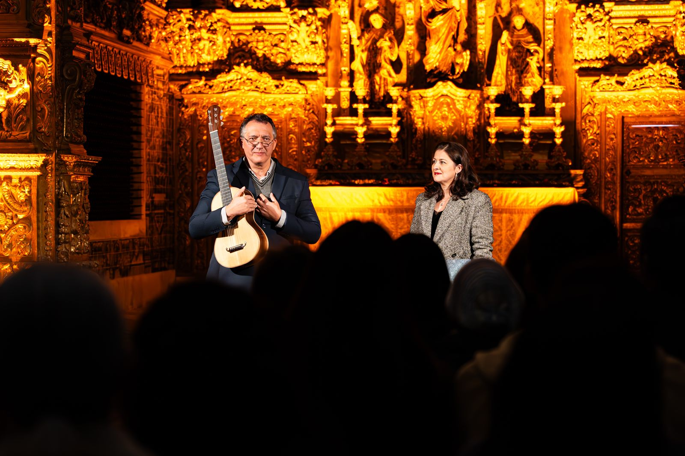
Trajetória
Onze anos, lidos de cima a baixo.
Da estreia em Corumbá, em 2015, aos concertos na Europa. Cada entrada traz o ano, o que foi apresentado e onde.
-
2015
SESC Partituras — a estreia
Teatro do SESC · Corumbá, MS
Convidados para o projeto SESC Partituras, os dois estreiam juntos interpretando música de câmara brasileira composta ou arranjada para canto e violão, editada e publicada pelo próprio SESC.
Daí em diante começa uma série de apresentações nos campi da UFMS — Chapadão do Sul, Coxim, Paranaíba, Ponta Porã, Três Lagoas. No fim do ano, o Duo encerra a FETEC no Memorial da Cultura de MS.
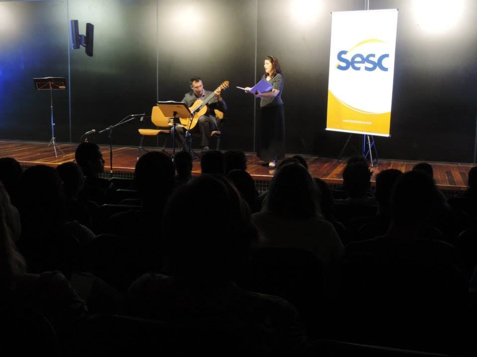
Projeto SESC Partituras — o primeiro concerto do Duo. -
2016
A primeira gravação em estúdio
Campo Grande e interior de MS
O Duo grava “As árvores do meu lugar” — poema de Eliane Guaraldo, música de Marcelo Fernandes — para o CD “As canções que fizemos para ela: homenagem a Maria Betânia”, iniciativa independente de professores e compositores da UFMS.
No mesmo ano, seguem as apresentações em eventos acadêmicos e culturais, entre eles o Chá Literário da Academia Sul-mato-grossense de Letras, no Centro Cultural José Otávio Guizzo.
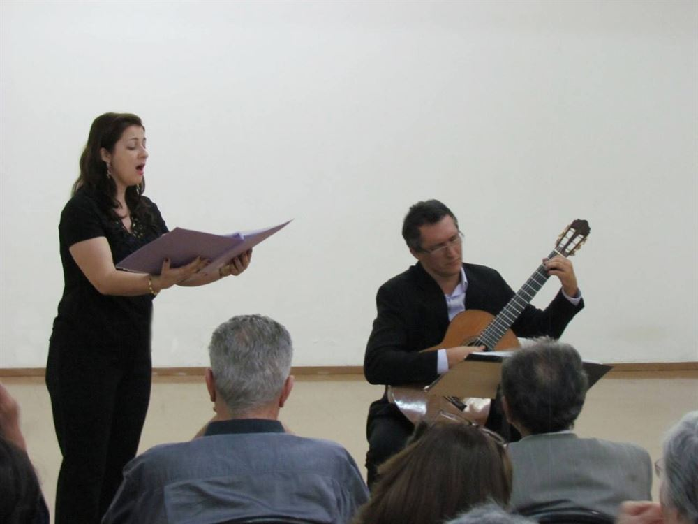
Chá Literário da Academia Sul-mato-grossense de Letras. -
2017
A música brasileira em seis cordas
Oito cidades do interior de MS
Homenagem a Dilermando Reis, patrocinada pelo FIC — Fundo de Investimentos Culturais do Governo do Estado. De maio a setembro o Duo percorre Bonito, Corguinho, Naviraí, Nova Andradina, Ponta Porã, Rochedo, São Gabriel do Oeste e Sidrolândia.
O concerto de encerramento acontece no Teatro Glauce Rocha, em Campo Grande, com os artistas convidados Eduardo Martinelli, Luciana Fisher e Renato Oliveira. Em outubro, o Duo participa do Movimento Concerto, no mesmo teatro.
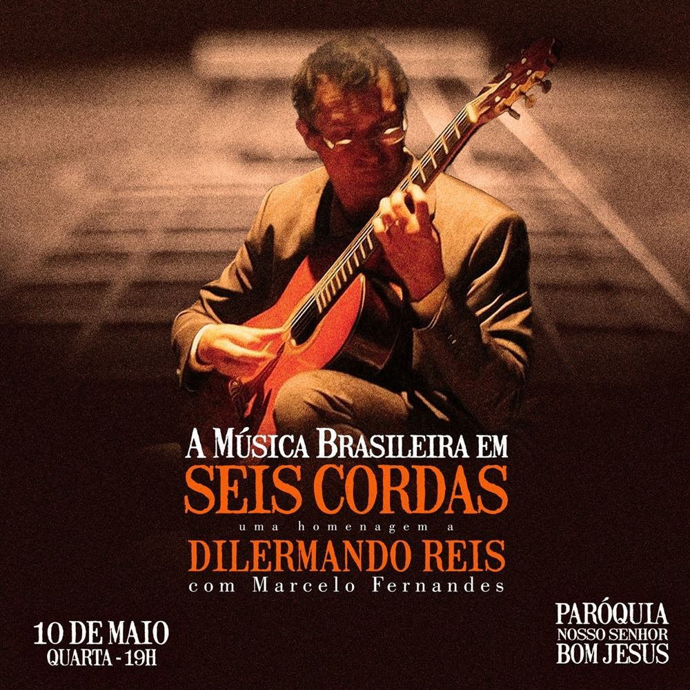
Cartaz do projeto, patrocinado pelo FIC/MS. -
2019
Canções poéticas e imagens modernistas
Pontos turísticos de Campo Grande · FMIC
Contemplado pelo Fundo Municipal de Investimentos Culturais, o projeto rende uma série de vídeos gravados em pontos turísticos da cidade, com o violinista Heitor Lotti e a cantora lírica Andressa Chinzarian.
Em junho do mesmo ano, a obra “Fogo da Poesia” estreia na Academia Brasileira de Letras de Mato Grosso do Sul, com transmissão pela TV Pantanal.
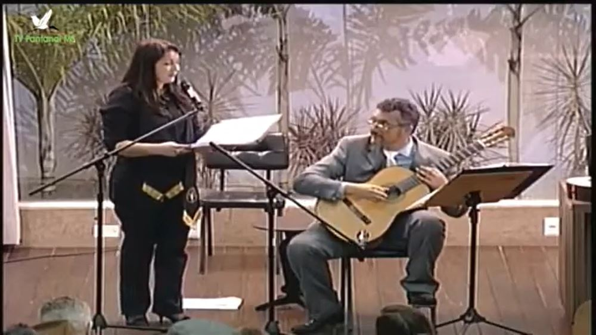
Recital do Duo em 2019. -
20202021
Concertos a distância
Teatro Glauce Rocha · transmissão ao vivo
Durante a pandemia o Duo mantém a agenda dentro do Movimento Concerto on-line: apresentações no Teatro Glauce Rocha, sem plateia, transmitidas ao vivo pelo canal da TV UFMS.
-
2021
“Ode à Campo Grande” vira clipe
Programa Meu Mato Grosso do Sul · TV Morena
A canção — música de Marcelo Fernandes sobre poema de Rubênio Marcelo — é escolhida para o aniversário da capital, gravada em estúdio pelo Duo e transformada em clipe musical.
É também o período em que Marcelo compõe uma série de canções exclusivas para o Duo sobre poetas do Estado — Delasnieve Daspet, Rubênio Marcelo — e sobre o poeta Carlos Nejar, apresentadas na Academia Sul-mato-grossense de Letras e em eventos da AFLAMS. O Duo se apresenta ao vivo no programa “Tudo de Bom”, do SBT.
-
2022
Encontro com a música clássica
Teatro Glauce Rocha · agosto
O Duo integra a programação do festival organizado pela Orquestra Sinfônica Municipal de Campo Grande.
Entre abril e julho já havia se apresentado no Instituto Histórico e Geográfico de MS, gravado para a TV Assembleia, homenageado a poeta Raquel Naveira e participado do lançamento da revista “Estação Folclore”, no SESC Cultura. No fim do ano vem novo aporte do FIC, agora para o projeto “Cem anos de Semana de Arte Moderna em Terras Pantaneiras”.
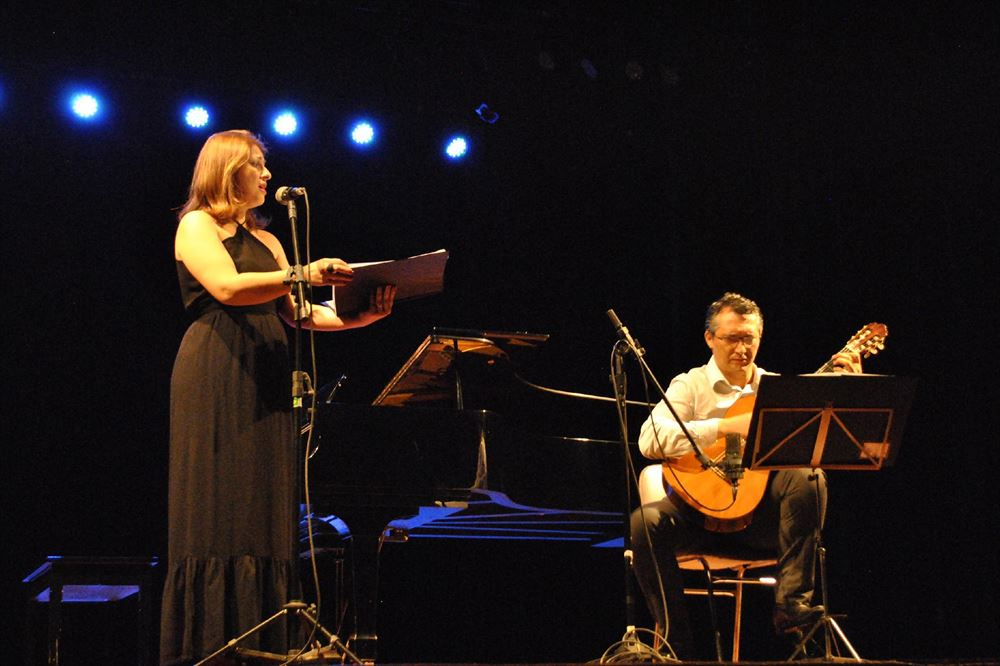
Teatro Glauce Rocha, Campo Grande. -
2023
Academia Brasileira de Letras, no Rio
ABL e PEN Clube do Brasil · Rio de Janeiro
O Duo se apresenta na sede do PEN Clube do Brasil, por ocasião da instauração do PEN Clube Centro-Oeste, e na Academia Brasileira de Letras, estreando obra de Marcelo Fernandes sobre poema de Carlos Nejar.
Em abril, havia aberto o Festival Internacional de Violão, no Teatro Glauce Rocha.
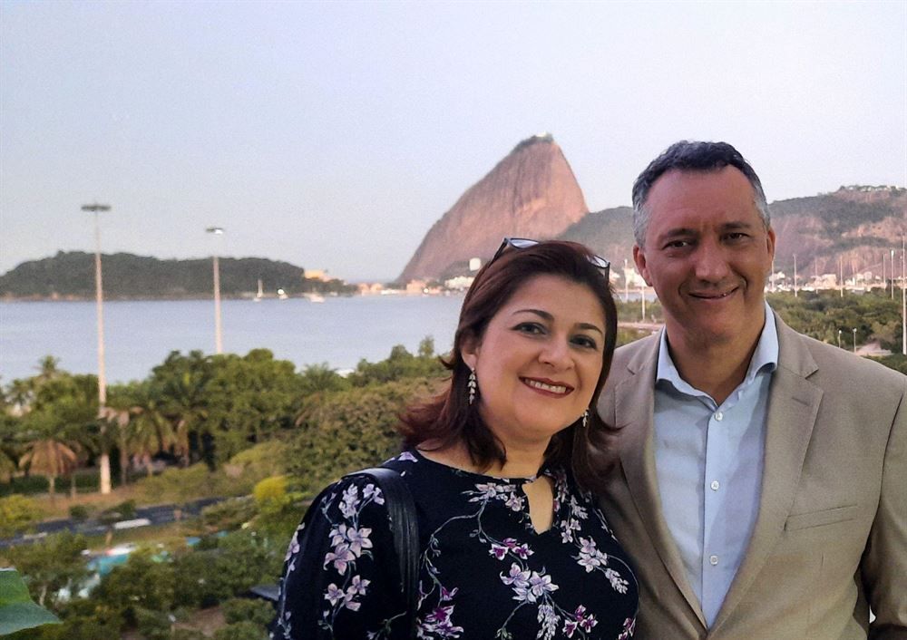
Rio de Janeiro, 2023. -
2023
Cem anos de Semana de Arte Moderna em Terras Pantaneiras
Seis cidades de MS
O projeto contemplado pelo FIC no ano anterior leva o Duo de volta ao interior — Aquidauana, Corumbá, Coxim, Dourados, Ponta Porã e Três Lagoas — em parceria com a UEMS, o IFMS e a UFMS. Os concertos foram oferecidos gratuitamente à população.
O encerramento, em 11 de outubro, comemorou a divisão do Estado de Mato Grosso do Sul no Bioparque Pantanal — teatro lotado, com presença de autoridades.
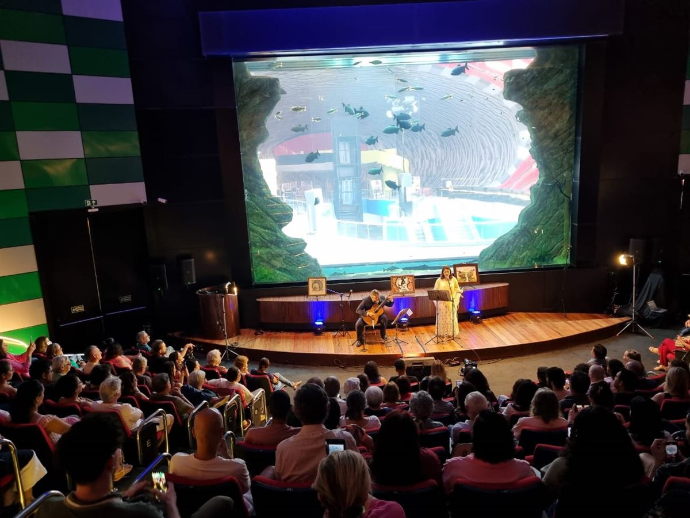
Encerramento no Bioparque Pantanal, 11 de outubro de 2023. -
2023
Memorial da América Latina
São Paulo · setembro
O Duo abre o VIII IFLAC World Brazil — Peace Congress, com participação especial do violinista Heitor Lotti.
Ainda em 2023, Marcelo compõe duas canções sobre poemas de Raquel Naveira para o CD “Cabeza de Vaca, Andarilho das Américas”, lançado no Teatro Glauce Rocha com um coletivo de artistas sul-mato-grossenses.
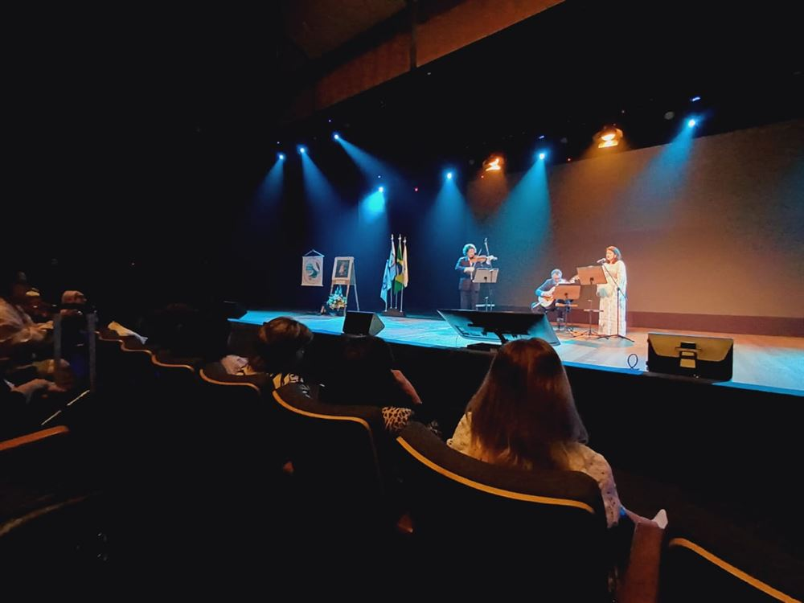
Memorial da América Latina, São Paulo. -
2024
Projeto ALMAR — fados
SESC Prosa · 8 de outubro
Um concerto de fados portugueses, com os poetas Rubênio Marcelo e Ana Maria Bernardelli e músicos convidados — a soprano Luciana Fisher e os instrumentistas Luiz Sayd e Joel Mendes.
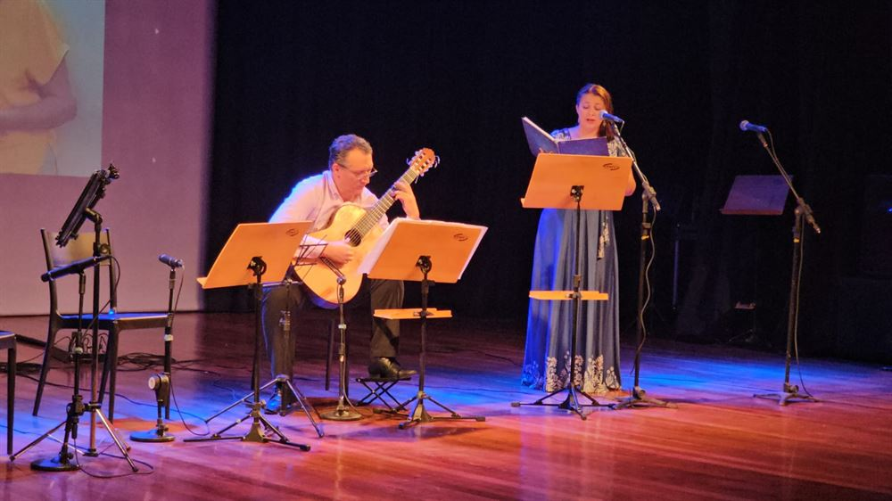
Lançamento do livro do projeto ALMAR, SESC Prosa. -
2024
Aveiro — Festivais de Outono
Igreja das Carmelitas · Portugal · novembro
O Duo é convidado a integrar a programação dos Festivais de Outono da Universidade de Aveiro. No programa, canções europeias e brasileiras, incluindo composições de Marcelo Fernandes.
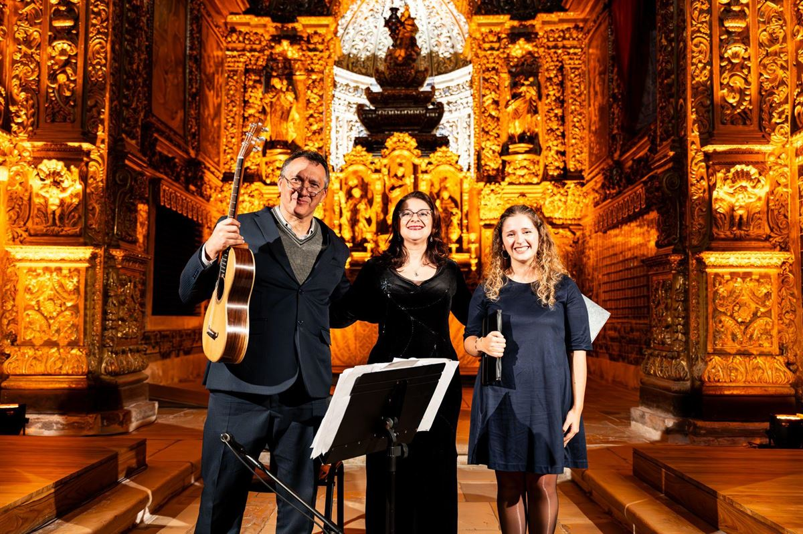
Igreja das Carmelitas, Aveiro — Portugal. -
2024
Nepomuk — Svatojánské Muzeum
República Tcheca · novembro
Apresentação dentro da agenda cultural do tradicional museu de Nepomuk, a convite do consulado tcheco, na mesma viagem que levou o Duo a Portugal.
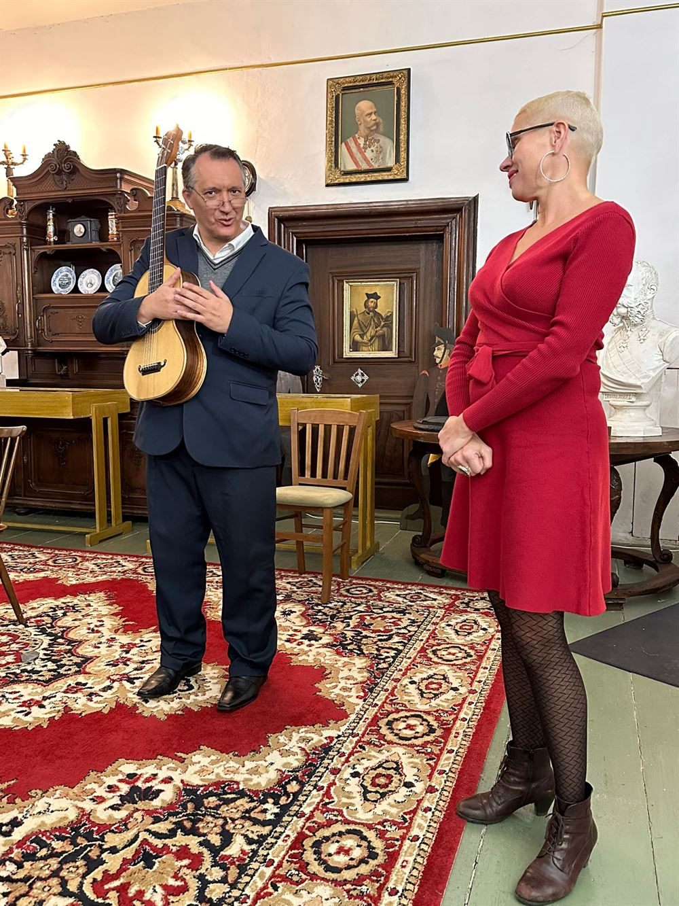
Svatojánské Muzeum, Nepomuk — República Tcheca. -
2025
Berna e Paris
Suíça e França · março e abril
Em Berna, o concerto se realizou na casa da Embaixadora do Brasil, com a presença de embaixadores de vários países. Em Paris, na Maison de l'Amérique Latine e na Université Sorbonne Nouvelle.
No repertório, canções de Marcelo Fernandes sobre poetas sul-mato-grossenses — Delasnieve Daspet, Raquel Naveira, Rubênio Marcelo — e obras do compositor brasileiro Otto Pintiaski. Na mesma turnê, Marcelo fez ainda um recital solo no Conservatório de Winterthur.
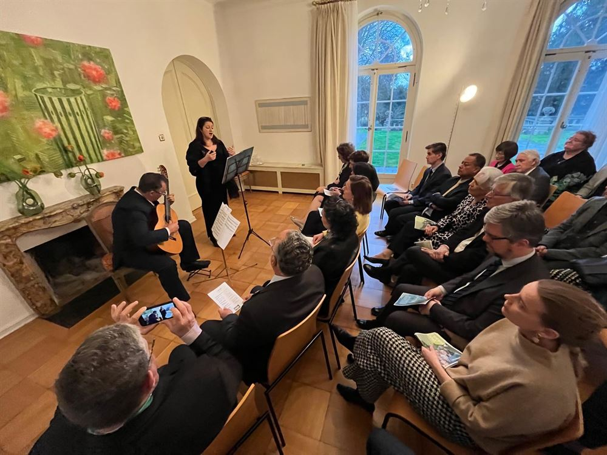
Casa da Embaixadora do Brasil, Bern — Suíça. -
2025
Umbria — Todi e Deruta
Itália · julho
Dois concertos na região da Umbria: em Todi, dentro da programação do festival Suoni dal legno, e no Museo Regionale della Ceramica, na Comune di Deruta.
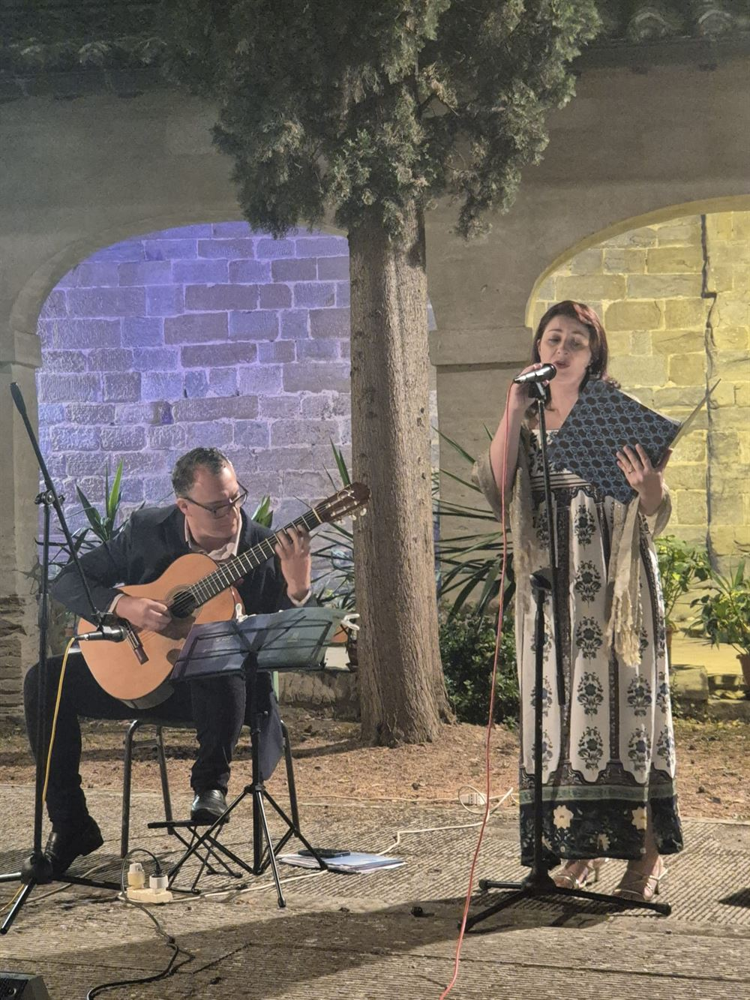
Festival “Suoni dal legno”, Todi — Itália. -
2025
Cerimônias e aberturas
Campo Grande, MS
Posse da Presidência da OAB no Teatro Rubens Gil de Camillo (29 de janeiro); abertura da COP 30 — Bioma Pantanal, no Auditório Insted (30 de setembro); e a Semana de Recepção aos alunos do curso de Música da UFMS, no Anfiteatro Luís Felipe de Oliveira, em março.
-
2026
Femina Vox e as escolas municipais
Teatro Rubens Gil de Camilo · 16 de março
O Duo abre o evento internacional Femina Vox, em Campo Grande.
No mesmo ano começa o projeto “Entre o rural e o urbano: as canções de Almir Sater e Chico Buarque”, com apresentações em escolas públicas municipais — o repertório do Duo indo ao encontro de quem talvez nunca tenha entrado num teatro.
Mapa
Onde essas canções já foram cantadas.
Aproxime no Brasil ou na Europa e toque num ponto para ler o que aconteceu ali.
Países onde o Duo se apresentou Onde Marcelo Fernandes tocou como solista
Escolha um ponto no mapa para ler sobre os concertos daquele lugar.
Imprensa
O que escreveram sobre o Duo.
Matérias em veículos do Brasil e de Portugal, da estreia no interior de Mato Grosso do Sul às turnês europeias.
-
Diário de Aveiro · Portugal · nov. 2024
Festivais de Outono apresentam hoje o Duo Amábile
O jornal anuncia o concerto na Igreja das Carmelitas, dentro da programação dos Festivais de Outono da Universidade de Aveiro.
Ler a matéria -
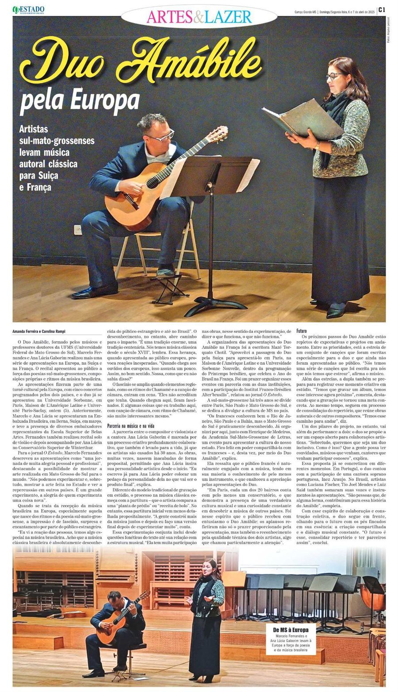
O Estado · Artes&Lazer · abr. 2025Duo Amábile pela Europa
Página inteira sobre a turnê por Suíça e França: os concertos em Berna, na Maison de l’Amérique Latine e na Sorbonne Nouvelle, e como nascem as canções do Duo.
Baixar a página -
Correio do Estado · dez. 2024
Duo Amábile realiza concertos na Europa
A cobertura da viagem que levou o Duo à República Tcheca e a Portugal, com repertório de canção brasileira contemporânea.
Ler a matéria -
Violão Brasileiro · 2023
Recital na Academia Brasileira de Letras, no Rio
O site especializado registra o recital na ABL, com a estreia de obra de Marcelo Fernandes sobre poema de Carlos Nejar.
Ler a matéria -
O Estado Online · 2023
Em noite histórica na ABL, Duo Amábile homenageia Delasnieve Daspet e Carlos Nejar
A viagem ao Rio de Janeiro para o recital na Academia Brasileira de Letras e no PEN Clube do Brasil.
Ler a matéria -
G1 Mato Grosso do Sul · out. 2023
Semana de Arte Moderna recebe homenagem no Bioparque Pantanal
O encerramento do projeto “Cem anos de Semana de Arte Moderna em Terras Pantaneiras”, com teatro lotado em Campo Grande.
Ler a matéria -
Fundação de Cultura de MS · 2023
Semana de Arte Moderna é homenageada no Mato Grosso do Sul
O projeto contemplado pelo FIC levou concertos gratuitos a seis cidades do interior, em parceria com a UFMS, a UEMS e o IFMS.
Ler a matéria
{kind=link}
Para a imprensa
Material liberado para divulgação de concertos. A foto oficial pode ser publicada com o crédito “Divulgação / Duo Amábile”.
{kind=link}
Repertório
Quatro séculos, e o que se escreve agora.
O programa muda conforme a ocasião, mas a espinha é sempre a mesma: a canção brasileira, sobretudo a contemporânea e a regional.
-
Séculos XVI a XVIII
Música antiga
Repertório europeu escrito para voz e instrumento dedilhado.
-
Século XIX
Clássico-romântico
O lied e a canção de salão, no arranjo para canto e violão.
-
Século XX
Canções do século passado
Obras originalmente escritas ou arranjadas para essa formação.
-
Hoje · a especialidade do Duo
Canção brasileira contemporânea
Produção atual e regional, em boa parte composta por Marcelo Fernandes sobre poemas de escritores brasileiros — inclusive canções em nheengatu, estreadas na turnê europeia de 2025.
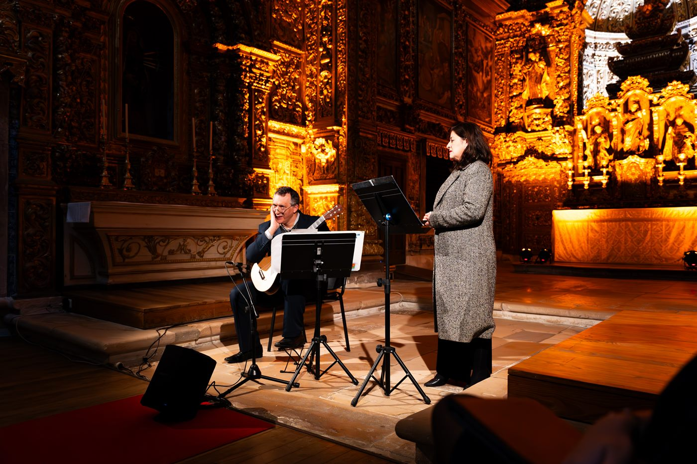
Poetas musicados pelo Duo
- Carlos Nejar
- Raquel Naveira
- Rubênio Marcelo
- Delasnieve Daspet
- Eliane Guaraldo
- Fernando D'Andreia
Escreveram
Ao incluir em seu repertório obras inéditas inspiradas na poesia brasileira, o Duo Amábile criou pontes entre literatura e melodia, revelando ao mundo a riqueza da cultura brasileira em toda a sua multiplicidade.
Poeta, membro da Academia Sul-mato-grossense de Letras
Contato
Convide o Duo para o seu palco.
Teatros, igrejas, festivais, universidades, academias de letras e eventos culturais. O programa é montado junto com quem convida — e pode incluir obras escritas especialmente para a ocasião.
- anaemarcelo440@gmail.com